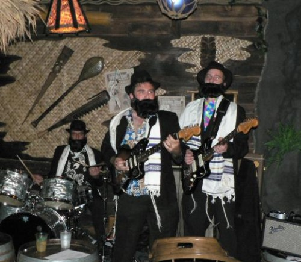

Gwen Verdon was ahead of her time: here she is with two dancers, performing a Bob Fosse-choreographed routine on the Ed Sullivan show, to Unk’s 2006 crunkular odyssey, “Walk it Out.”
And you’re a lifeline of wonder on this Planet Earth! Here is Disney World’s O Canada! movie in astounding Circlevision, brought to you by Chreestopher straight from the Canada pavilion at Epcot:
Don’t want to sit through the whole film? Philistine! Alright, here’s what you really want: pure, uncut Canadian idolatry, in glorious musical form:
Press play to hear all about the wondrous bounty that is Canada.
The Quests’ Go Go ReQuests album (pictured above) — well, you can see for yourself how fabulous it is. One of the songs on the album is “Ding Dong Twist,” which sounds like either a new Hostess snack product, or an obscene gesture. Sing Along With the Christones features a band of young, hip, Asian priests — each wearing one of those little white & black priest collar things. Four Hits, also from the Quests, has a very soulful-looking pointing finger on the cover — appropriately, to illustrate their song “Soul Finger.” Now, that’s a song I want to hear.
Some of the albums look funky, like they may be soundtracks to obscure Thaispoitation films… others look like the Ravi Shankar’s schtick re-arrived back home after being filtered through the Beatles… and lots are clearly light, fluffy Go-Go dancing frothiness, complete with smiling, happy girls. Well, except for Off Beat Cha Cha, which has three girls who are clearly dancing under court order and are miserable about it.
Don’t take my word for it, go check out the entire gallery of albums for yourself at David Greenfield’s photo site.
Here at Junkyard Clubhouse we love all things junkyard, and right at the top of our list are Junkyard bands.
And Fat Albert has one of the rockin’est Junkyard bands ever. The groovy kids record blog Way Out Junk has gifted the Internet with not one, but TWO rips of classic Fat Albert and the Junk Yard Band albums: Creativity and Rock N’ Roll Disco.
The famous junk yard band is organized when the kids are unable to afford musical instruments
Listening to these records will convince you that real-life junkyard instruments can sound just like the smooth sounds of studio musicians! Actually, while the pictures of the Junkyard band are pretty sweet, there’s not much in the way of classic Fat Albert music on either of these albums. The Rock N’ Roll Disco in particular is pretty bad. Hmmm. Now I’m wondering why I even bothered bringing it up. Here, watch the opening of the Fat Albert Show instead.
Alright boychiks and goyim, get ready for some righteous reverb from the chosen surfers:

Meshugga Beach Party at Forbidden Island Tiki Lounge
Meshugga Beach Party played at Forbidden Island Tiki Lounge’s first anniversary party this weekend (which was a blast, by the way… here are my pics). I hadn’t heard of them before, but quite a few folks in the crowd had. From my photo above, you probably have them pretty well figured out — they perform traditional Jewish folks songs as surf tunes. And they perform in full Hasidic regalia (those beards must get awfully itchy). But the best part: they’re really good. I’m not a surf music aficianado, but I run in a pretty surf-savvy circle, and there was high praise for Meshugga Beach Party all around.
Meshugga Beach Party perform Zemer Atik (not filmed at Forbidden Island)
In 2002, the band Ween was approached to write a jingle for one of Pizza Hut’s Desperate Product Reconfigurations of the Month, the Insider pizza. The Insider pizza was the one where they put a layer of cheese inside the pizza’s crust. Never has a new pizza design so captured the imagination of the nation, with the possible exception of the P’zone.
Pizza Hut wanted to hire an edgy band come up with an edgy jingle for their very edgy new product, hence Ween. Ween came up with a funk-infused ditty, “Where’d the Cheese Go?” Click play to hear it:
Pizza Hut didn’t like it, or any of the other attempts that Ween made at giving them what they wanted. They wrote, they re-wrote, and finally, tired of it all, they wrote “Where’d the Motherfuckin’ Cheese Go At?”
Where’d the Mutherfuckin’ Cheese Go At?
In case the title doesn’t make it obvious, that one’s NSFW, unless you’ve got headphones handy. And thus, Ween’s association with Pizza Hut ended before it even really started, probably to the delight of all.
1971, Cindy und Bert sing “Der Hund von Baskerville”
German singing sensation duo Cindy und Bert sing a song about the Shelock Holmes story “The Hound of the Baskervilles,” in German, to the tune of Black Sabbath’s “Paranoid.” German youth dance, morosely. An utterly un-houndlike dog yawns. Cindy und Bert sing with all the fiery passion that might go into ordering a bowl of potato soup. The camera tries, valiantly but unsuccesfully, to perk the scene up with some violent zooms in and out of the “Hits-a-Go-Go” logo.
I’d never heard of Cindy und Bert, but apparently they were all the rage in Germany and the Netherlands in the ’70s. Just so you don’t think they were all doom & gloom, here’s a much perkier Cindy und Bert, in 1973.
When I was very, very young (but I can’t remember how young) … I had some vague memories of the Banana Splits that were not quite right. All my Banana Splits memories were from when I was pretty young, but I seemed to have memories of the Splits looking different than they normally do. All this time I had chocked it up to fuzzy, incorrect memories due to my little kid brain. But just a few years ago I came across The Wombles on the Internet, and then it all made sense. I recognized the characters faces and the hats immediately. Those early memories weren’t of the Banana Splits, they were of the Wombles. Who knew the market for fuzzy characters in costumes singing Bubblegum was so big?
I have no idea how I saw it as a kid, since it seems like it was shown primarily across the pond. Does anyone out there remember seeing The Wombles?
It’s always a great feeling to put to rest fuzzy mysterious memories that have been lingering in my head for decades.
Humu’s last post about Floratina’s Funny Face cup reminded me of Way Out Junk‘s post about Goofy Grape Sings. After all these years it’s so great to finally match a voice to that Funny face … and it sounds like Boris Badinov. Yes, all the voices are done by Paul Frees. The songs are available for download, but personally I just like the album cover.